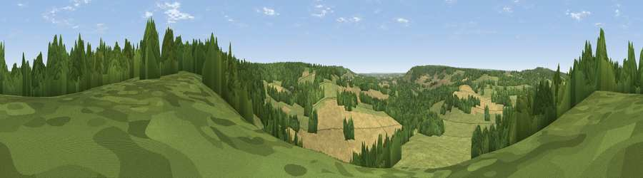

Viewpoint near Chilham
#26606 in England · top 50% of its area beats it · near ChilhamThe view, rendered

A 360° render of this exact spot computed from the terrain model, tree cover and land cover — summer colours, afternoon light, calibrated against photographs of famous viewpoints. Real trees, hedges and buildings will differ in detail.
The panorama
Grey silhouette: terrain skyline in each direction (720 bearings, Earth curvature and refraction included). Dashed green: skyline with trees (+15 m) and buildings (+8 m) as obstacles. Blue strip: how far the ground is visible on each bearing.
Where the view opens
Wedge length = distance to the farthest visible ground on that bearing (vegetation-aware). Rings at 10, 25 and 50 km.
What fills the view
37% grassland · 34% woodland · 28% cropland ·
Angular shares of the visible panorama (visual magnitude), not map area. Landscape diversity 0.49 (0–1 Shannon).
Key numbers
More beautiful places nearby
The staircase of upgrades: each row has a higher view potential than everything closer. Driving times are estimates from straight-line distance, calibrated against real road routing — check an actual route before setting out.
| Place | Direction | Drive | Score |
|---|---|---|---|
| Viewpoint near Godmersham | SW · 3 km | ~8 min | 47.5 |
| The Mount (Popsy's View) | WNW · 5 km | ~10 min | 61.7 |
| Viewpoint near Wye | SSW · 6 km | ~13 min | 70.9 |
| Viewpoint near Brabourne | S · 10 km | ~19 min | 71.6 |
| Viewpoint near Brabourne | S · 10 km | ~20 min | 71.9 |
| Viewpoint near Westwell | WSW · 11 km | ~21 min | 72.2 |
| Tolsford Hill | SSE · 16 km | ~28 min | 77.9 |
| Viewpoint near Capel-le-Ferne | SE · 21 km | ~36 min | 80.2 |
51.23299, 0.98195 · source: screening · position refined by local search. Computed location — check access rights before visiting.